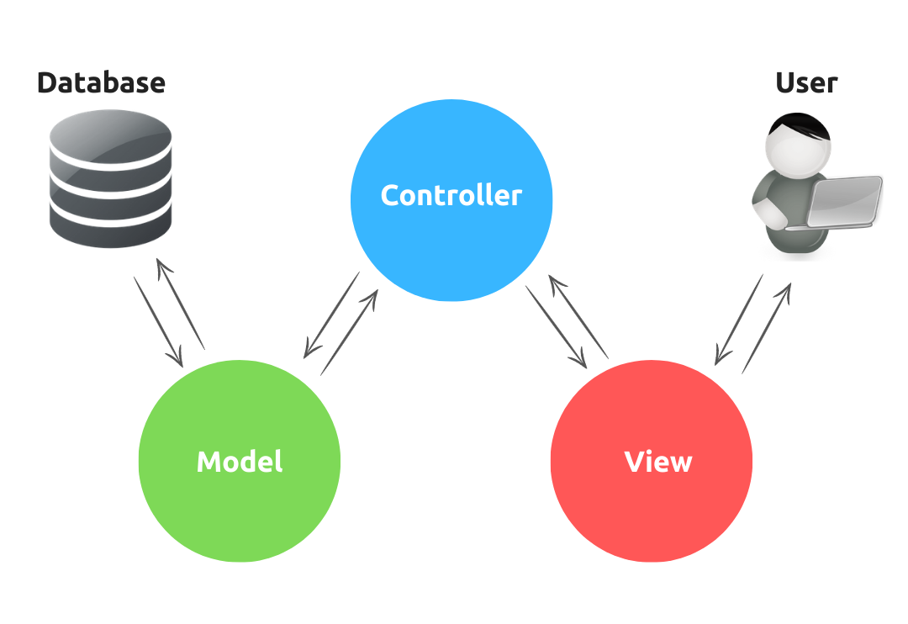
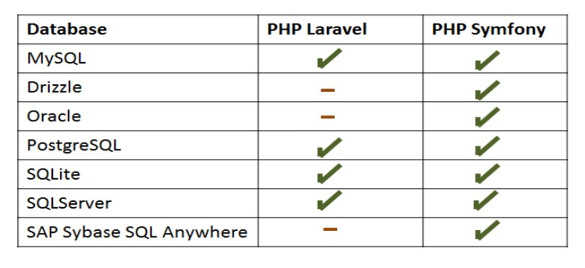
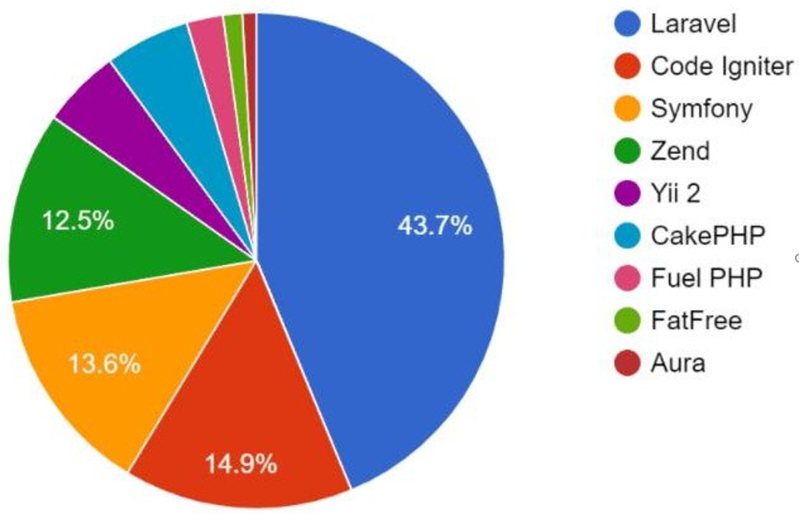

digitale vaardigheden
Laravel & Symfony
Belangrijke functionaliteiten van Laravel :
Laravel en Symfony zijn de meest populaire PHP-frameworks.

Laravel
- Het is een open sourceframework gebaseerd op de MVCstructuur.
- Open source is voor iedereen toegangelijk.
- MVC staat voor model, view en controller.
- Het is in de scripttaal PHP geschreven.
- Laravel is makelijk om mee te werken, vooral als je al bekend bent met (PHP).
- Het is erg gebruiksvriendelijke, het software is krachtig.
- Met Laravel kunnen functionaliteiten binnen een paar minuten in de webapplicatie gebouwd worden.
- Meestal zonder Laravel moet je code’s handmatig invoeren.
- Door Laravel kan men heel veel activiteiten geautomatiseerd worden men tijd en geld bespaart.
- Object Relational Mapping kan met behulp van de modellen uit de MVC-structuur database uitlezen(in ons taal nomen we ORM ).
- het zorgt ervoor dat code gemakkelijker wordt gemaakt voor de ontwikkelaar.
- Wat handmatig zou worden kunt u met laravel complete anders worden.
Symfony
- In 2005 kwan Symfony voor eerste uit.
- Symfony is een open-source PHP framework voor het bouwen van geavanceerde webapplicaties en API’s.
- Het is een volwassen en betrouwbare PHP-framework.
- De documentatie van Symfony wordt, vergeleken met andere PHP-frameworks, beschouwd als een van de beste.
- Het zorgt ervoor dat je website of applicatie een goede structuur heeft. (Hierdoor is de code makkelijk opnieuw te gebruiken).
open source

Open source software is software waarvan de broncode is gepubliceerd
en vrij beschikbaar is voor het publiek. Iedereen kan op die manier vrij kopiëren, aanpassen en
verspreiden zonder kosten aan auteursrechten en toeslagen. De ontwikkeling van open source software
gebeurt door gemeenschappelijke samenwerking van zowel individuele programmeurs als grote bedrijven.
MVC staat voor model, view en controller
- Het model beheert gegevens in een databases
- De controller kan gezien worden als een aansturingsysteem
- De view toont de opdracht van de controller
verschil tussen Symfony en Laravel
Definitie
- Het is een open source die de ontwikkelaar kan gebruiken bij het ontwikkelen van een eenvoudige PHP-applicatie.
- Het wordt gebruikt voor de grootste schaalbare of zeer complexe soorten bedrijfsprojecten.
Schaalbaarheid
- Het is gemakkelijk om wijzigen en code’s aan te passen.
- Bepaalde functies om het flexibel te maken op basis van zakelijke vereisten.
Open source
- Vaak gebruikt door normale PHP-ontwikkelaars, hebben geen populair open source-platform.
- Heb een van de grootste open source platforms zoals PHPBB, Piwik, Drupal, etc.
Snelheid
- Snelheid van toepassing is normaal niet zo veel anders dan andere normale PHP-toepassing. Het zorgt vooral voor een goed versiebeheersysteem, dat de migratie van applicaties later helpt.
- Als het correct is geïmplementeerd, is de snelheid van de hele applicatie onverwacht verbeterd. Het heeft een geweldige functie om de snelheid van elke afzonderlijke kernfunctie en de volledige applicatiesnelheid eenvoudig aan te passen door te beslissen of deze functies vereist zijn of niet.
Templerende motoren
- Laravel gebruikt het bladvormingssysteem.
- Symfony gebruikt het Twig-templatasysteem.
Database Acess
- Laravel gebruikt Eloquent voor databasetoegang.
- Symfony gebruikt Doctrine voor databasetoegang.
Formulieren en validators
- In Laravel kan de programmeur validatie uitvoeren in een formulier of door een handmatige validatie van een verzoek.
- In Symfony kan de programmeur alleen een model valideren.
Rekbaarheid
- Laravel heeft ongeveer 9000 pakketten.
- Symfony heeft ongeveer 2830 bundels.
Database-ondersteuning
Als we samen naar de figuur kijken zien wij dat laravel er aanterkelijk is, 43.7 procent maakt gebruk van Laravel.

Ik heb zelf een vergelijking gemaakt tussen de Laravel en Symfony.
Ik zal mij ervaring met u delen, ik zal het voorlichten.
Beide hebben deze overeenkomsten.
| Wat | Laravel en Symfony | ||
|---|---|---|---|
| Geschreven in | PHP | ||
| Ontwerp patroon | MVC | ||
| Type | Web framework | ||
| Licentie | Licentie MIT | ||
| ondersteunen | ORM | ||